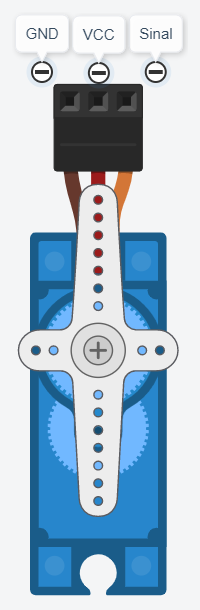
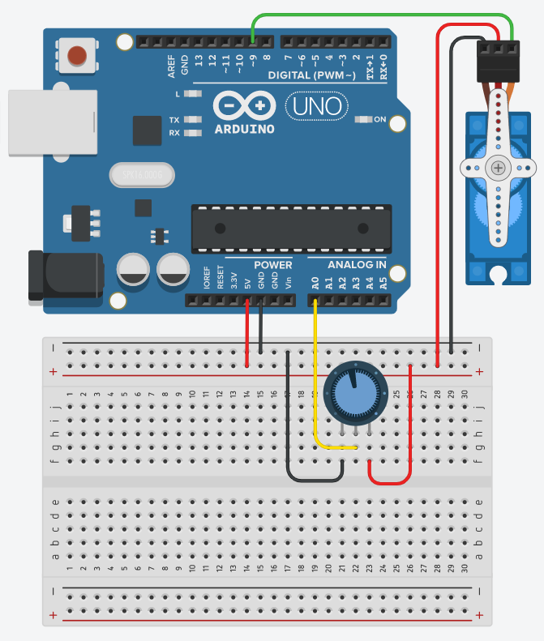

Servo Motor
O servo motor é amplamente utilizado em projetos que necessitam do uso de um controle de movimento que exige posicionamento de alta precisão, reversão rápida e alto desempenho. Uma de suas características é a capacidade de se colocar em uma certa posição e manter-se nela, mesmo sofrendo com forças opostas. Sendo assim, é possível encontrá-lo em projetos de robótica, sistemas de radares, leitores de DVD, em brinquedos como carrinhos de controle remoto e na indústria, onde se torna um componente perfeito para automatização em linha de produção.
O Micro Servo motor SG90 é um dos servos mais populares para aplicações com Arduino. É possível comandar que o servo movimente seu eixo até determinado ângulo, podendo ir de -90º à 90º, ou seja, possui um grau de liberdade de 180º.
O servo motor possui três fios, sendo eles:
- Marrom: GND
- Vermelho: VCC (com uma tensão de operação de 3v até 7,5V
- Laranja: Controle PWM (fio que fará comunicação com o Arduino)

Note que os servos motores tendem a drenar uma quantidade considerável de energia, então, caso você precise utilizar mais de um ou dois motores simultaneamente, é recomendável utilizar uma fonte de energia externa para alimentá-los.
O Arduino possui uma biblioteca que facilita o controle de um servo motor, a Servo.h. Ao utilizar a biblioteca, a função analogWrite() é desativada nos pinos digitais 9 e 10, ou seja, não é possível utilizar o PWM com esses pinos, pois eles serão reservados para o uso com os servos.
Alguns dos métodos mais utilizados são:
| Função | Descrição |
|---|---|
attach() | Equivale à função pinMode(), só que para os servos motores. Nela você passa como parâmetro o pino onde o terminal Sinal do servo está conectado ao Arduino. |
write() | Recebe como parâmetro um valor entre 0 e 180, que será definido como o ângulo do eixo do motor. |
read() | Retorna o atual valor do ângulo do eixo do motor (o último valor passado através de uma função write()) |
| read() | Retorna o primeiro byte de dados recebido disponível, ou -1 caso não haja nada disponível. |
| readBytes() | Lê caracteres da porta serial e move-os para um buffer. |
| write() | Envia dados em formato binário para a porta serial. |
Neste projeto, você conseguirá controlar a haste do motor através de um potenciômetro.
Hardware
Materiais necessários
- 1x potenciômetro de 10KΩ (a resistência não afetará o resultado deste projeto)
- 1x servo motor (preferencialmente o modelo SG90)
Esquemáticos

A montagem do circuito é bem simples, basta conectar a energia tanto no motor quanto no potenciômetro. Logo após, deve-se conectar o sinal do motor ao pino digital 9 do arduino e o pino central do potenciômetro ao pino analógico A0.
Software
O começo deste projeto é um pouco diferente: será necessário incluir a biblioteca do próprio arduino que contém os métodos do servo motor, para facilitar o uso do mesmo. Para isto, basta iniciar o código com a seguinte linha:
#include “Servo.h”
Com isso, pode-se então declarar e inicializar algumas variáveis. Aqui também será declarado um objeto do tipo Servo, que foi fornecido pela biblioteca Servo.h
Servo servo; // Inicializa o servo
int angulo = 0; // Ajusta o ângulo inicial do Servo
int pot = A0; // Inicializa o pino analógico para o potenciômetro
Agora é possível definir o pino do potenciômetro como sendo de entrada e configurar a porta do servo motor, utilizando o método 'attach()':
void setup() {
servo.attach(9); // Define que o servo está conectado a Porta 9
pinMode(pot, INPUT) ; // Define o pino do potenciometro como entrada
}
Na função loop() é tudo muito simples. Será utilizada a função analogRead() para ler na porta analógica. O valor retornado será um inteiro entre 0 e 1023, porém o ângulo que devemos passar para rotacionar o servo motor deve estar entre 0 e 180. Para esse fim é utilizada a função map(), convertendo a faixa de valores dados pela entrada do potenciômetro para a faixa de valores que será enviada para o motor.
void loop() {
angulo = analogRead(pot);
angulo = map(angulo, 0, 1023, 0, 180);
Com o valor do ângulo, basta passá-lo para método write() e botar um pequeno delay.
servo.write(angulo);
delay(5);
}
E é simples assim! Agora, basta rodar o código e notar que, ao girar o potenciômetro, a haste do motor irá girar também. Veja no gif abaixo: